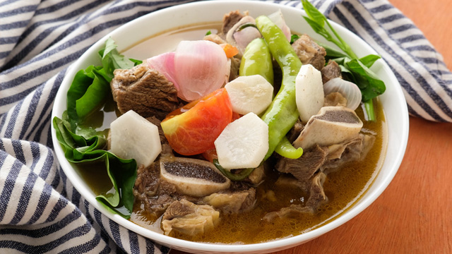

SINIGANG/h1>

DESCRIPTION
A one-pot meal like Beef Sinigang (Sinigang na Baka) with the ingredients of healthy choices – a vegetable that provides many nutrients including potassium, dietary fiber, vitamin A and C. While meat like beef supply nutrients that include protein, vitamin B and E, iron, zinc, and magnesium. This stew is authentic food for Filipinos because of the way it has made.
INGREDIENTS
- 1 kg beef brisket/ribs cut into cube
- large Red Onion, chopped
- 1 pack Tamarind Sinigang Mix
- 2 medium Tomatoes, chopped
- 4 pieces small Taro
- 4 pcs. Okra medium sized, cut into two
- 1 packet Spinach leaves
- Fish Sauce
- Pepper
STEPS
- Put the Beef and Onion in a pot.
- Pour water in a pot until the meat is barely covered bring to a boil then simmer for 45 minutes.
- Add the taro and chopped tomatoes, bring to a boil then simmer additional for 40 minutes.
- Add the Sinigang Mix and Okra then cook for 5 minutes.
- Add the spinach, season with pepper and fish sauce.
- Add Salt according to Taste.
- Serve Hot.